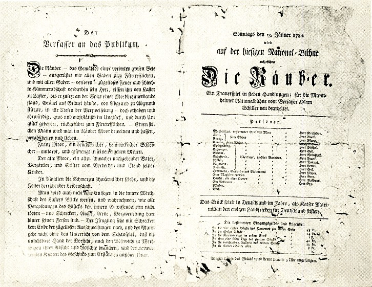

Lernziele
Ihr …
- stellt begründete Hypothesen auf, warum „Die Räuber“ 1782 einen Skandal auslöste,
- ordnet die 15 Szenen des Dramas den fünf Akten zu und gebt die Handlung in eigenen Worten wieder,
- beschreibt den Aufbau des Dramas (zwei Handlungsstränge: Schloss und Wald).
M1 · Der Theaterzettel der Uraufführung

M2 · Ein Augenzeuge berichtet
„Das Theater glich einem Irrenhause, rollende Augen, geballte Fäuste, stampfende Füße, heisere Aufschreie im Zuschauerraum! Fremde Menschen fielen einander schluchzend in die Arme, Frauen wankten, einer Ohnmacht nahe, zur Türe. Es war eine allgemeine Auflösung wie im Chaos, aus dessen Nebeln eine neue Schöpfung hervorbricht.“ Bericht eines (anonymen) Augenzeugen der Uraufführung, Mannheim 1782 (gemeinfrei)
Aufgabe 1 – Hypothesen bilden
- Basis Beschreibe in eigenen Worten, wie das Publikum laut M2 reagierte. (Einzelarbeit, 3 Min.)
- Basis Stelle zwei Hypothesen auf: Was könnte in einem Theaterstück passieren, damit Menschen so heftig reagieren? (Einzelarbeit, 3 Min.)
- Vergleicht eure Hypothesen zu zweit und einigt euch auf die überzeugendste. (Partnerarbeit, 4 Min.)
- Erweiterung Erläutere, welche Rolle der Titel „Die Räuber“ für die Erwartungen des Publikums 1782 gespielt haben könnte.
Denkanstöße
Überlegt: Wer sind die „Helden“ des Stücks? Wie stand man im 18. Jahrhundert zu Gesetz, Obrigkeit und Familie? Was durfte man damals öffentlich sagen – und was nicht? Theater war für viele das einzige „Massenmedium“.
M3 · Szenenpuzzle: Die Handlung in 15 Szenen
Jede Karte beschreibt eine Szene. Die Karten sind schon den fünf Akten zugeordnet, aber innerhalb jedes Akts sind die Szenen durcheinandergeraten. Das Drama hat zwei Handlungsstränge: im Schloss der Moors in Franken (Franz-Handlung) und bei der Räuberbande (Karl-Handlung).
Aufgabe 2 – Szenenpuzzle
- Basis Ordnet in jedem Akt die Szenen in die richtige Reihenfolge, von links nach rechts. Zum Verschieben den Finger kurz auf die Karte legen, bis sie sich anhebt, dann an den neuen Platz ziehen. Alternativ: mit ◀ ▶ eine Position nach vorne oder hinten. Karten bleiben immer in ihrem Akt.
- Basis Rahmt jede Karte farbig ein, indem ihr oben auf einen der Farbkreise tippt: grün = Schloss/Franz-Handlung, blau = Wald/Karl-Handlung, rot = beide Stränge treffen aufeinander.
- Tippt auf „Prüfen“. Auf jeder Karte seht ihr dann, ob sie richtig liegt und welche Szene sie ist. Korrigiert, bis alles passt.
- Erweiterung Beschreibt mithilfe eurer Farben den Aufbau des Dramas: Wo laufen die Handlungsstränge getrennt, wo und warum führen sie zusammen?
Kurzquiz zu den Akten
Aufgabe 3 – Inhaltssicherung
Überprüft euer Wissen. Wählt einen Akt aus und beantwortet die Fragen. Ihr erhaltet sofort eine Rückmeldung mit Erklärung.
Merkkasten
- „Die Räuber“ (gedruckt 1781, Uraufführung 13. Januar 1782 in Mannheim) ist Schillers erstes Drama und ein Schlüsselwerk des Sturm und Drang.
- Zwei Handlungsstränge: die Intrige des Franz im Schloss (Franken) und Karls Weg als Räuberhauptmann (Wald). Sie laufen in Akt IV/V zusammen.
- Auslöser der Katastrophe ist eine Briefintrige: Franz fälscht die Nachricht über Karl und den Antwortbrief des Vaters.
- Der Skandal entstand, weil das Stück einen Verbrecher als Idealisten zeigt und Gesetz, Obrigkeit und Familie radikal infrage stellt.
Hausaufgabe
Wähle eine Figur aus (Karl, Franz, alter Moor, Amalia, Spiegelberg) und notiere mit Akt/Szene drei Stellen, an denen sie sich besonders deutlich zeigt. Du brauchst sie in DS 2 für dein Expertenteam.